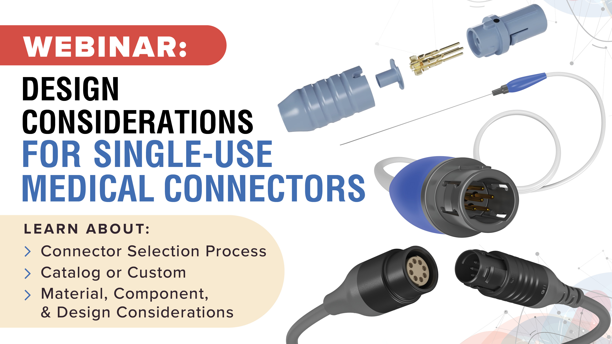
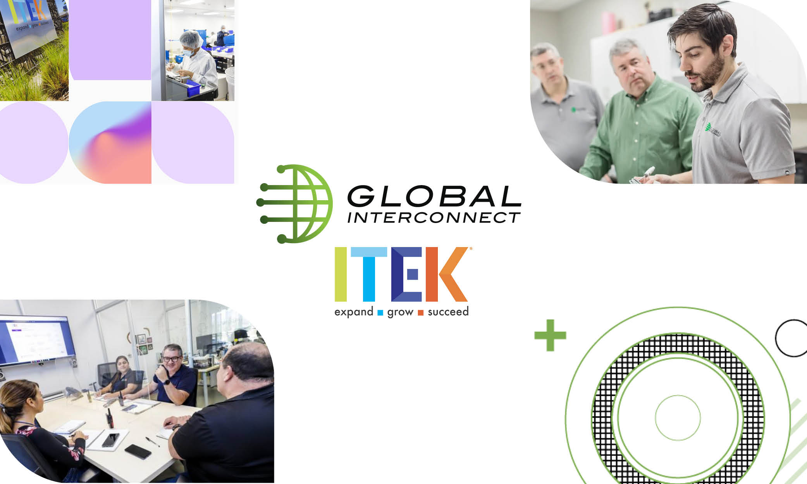
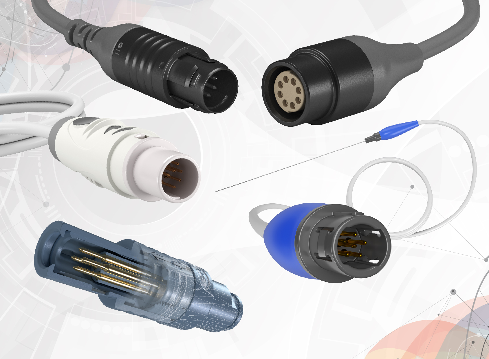
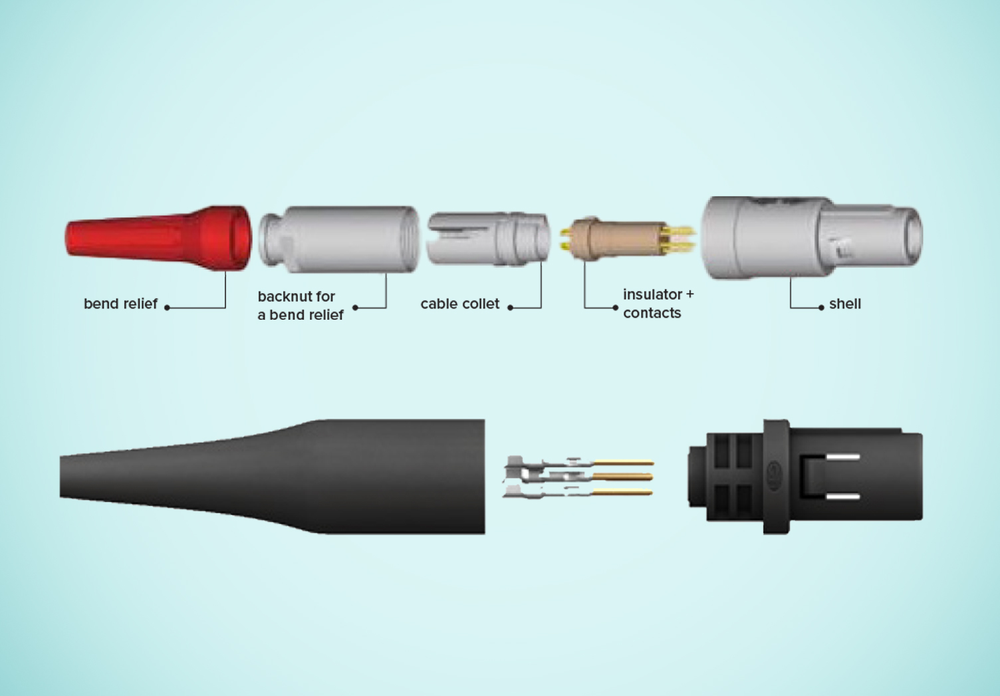
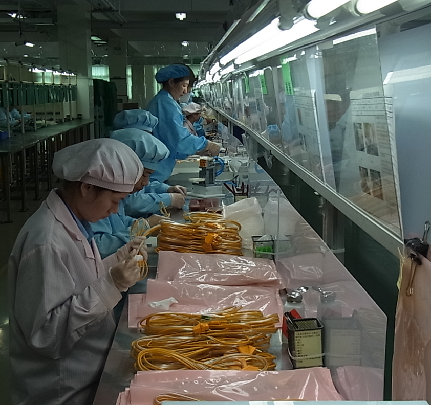

Design Considerations for Single-Use Medical Connectors
Key engineering factors when designing connectors for single-use applications — from materials selection to validation. Covers biocompatibility, sterilization compatibility, and cost drivers.

Key engineering factors when designing connectors for single-use applications — from materials selection to validation. Covers biocompatibility, sterilization compatibility, and cost drivers.

A comprehensive look at medical cable assembly construction, materials, performance requirements, and the reusable vs. disposable decision framework.

When off-the-shelf connectors fall short, custom connectors can improve human factors, reduce lead times, and differentiate your product in the market.
How Gii's US-Asia model creates transparency and quality alignment across a global supply chain, and what that means for OEM customers.

A deep-dive into RF ablation connector design options — from overmolded banana plugs to push-pull configurations — and how to optimize for cost without sacrificing reliability.

Single-use or reusable? Locking or non-locking? This step-by-step guide walks through the key decision factors for selecting the right medical connector for your device.

A custom connector solution that enabled a leading sports medicine OEM to scale production while hitting aggressive cost targets and maintaining zero-defect quality standards.

Manufacturing transfers are complex but essential for scaling. This guide covers regulatory, supply chain, process, and quality considerations when moving production to a new partner.

A technical overview of push-pull connector systems used in medical devices — how they work, industry standards, and when to consider purpose-built alternatives.
Talk to our engineering team about your project or specific technical needs.
Contact Our Engineers →